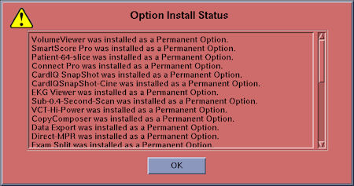

Option key installation will be automatically started after OS is started up.
Some options will ask you to confirm the settings. Check or enter the appropriate parameters.
When all eLicense keys are installed, the following pop-up message will appear.
